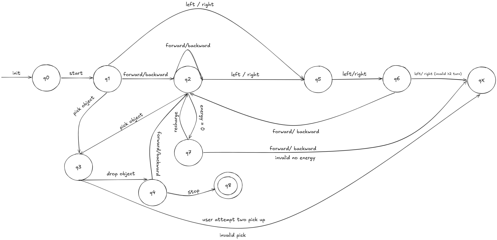

ProjectAutomata
ProjectAutomata is a robot command project that uses a state-machine diagram to validate command flow, movement, object handling, and acceptance rules.
DFA Diagram

ProjectAutomata is a robot command project that uses a state-machine diagram to validate command flow, movement, object handling, and acceptance rules.
